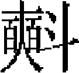
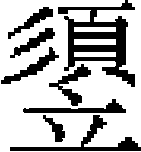

儒林一
自趙復至中原，北方學者始讀朱子之書。許衡、蕭

講學，爲大師，皆誦法朱子者也。金履祥私淑於朱子之門人，許謙又受業於履祥，朱子之學得履祥與謙而益尊。迨南北混一，衡爲國子祭酒，謙雖屢聘不起，爲朝廷所禮敬。承學之士，聞而興起，《四書章句集註》及《近思録》、《小學》通行於海内矣。延祐開科，遂以朱子之書爲取士之規程，終元之世，莫之改易焉。是故元之儒者，服膺朱子之學，篤信謹守，言行相顧，無後世高談性命、陽儒陰釋之習，嗚乎！是亦足以通《六經》之大義，傳孔、孟之心法矣。作《儒林傳》。趙復硯彌堅 金履祥衛益富 張

胡炳文程直方 敬瑛潘迪 許謙張樞 薛玄 馬道貫 吕洙［一］ 吕溥 陳庾潘迪 牟應龍 熊朋來 車若綰 徐之綱 胡一桂 戴良齊 熊禾 馬端臨胡三省 俞琰李簡 劉德淵 薛元宰沂 何中 董朴 榮肇 蕭韓擇 侯均趙復，字仁甫，德安人。太宗七年，皇子闊出伐宋，克德安，以其民嘗拒命，俘戮無遺。時楊惟中行中書省於軍前，姚樞奉詔即軍中求儒、道、釋、醫、卜士，凡儒生挂俘籍者，輒脱之歸。復在其中，樞與之言，奇之。復以九族俱没，不欲生，因與樞訣。樞恐其自裁，留帳中共宿，既覺，失復所在，遽馳馬追之。行及水際，見復被髮徒跣，仰天而號，欲投水。樞曉以「布衣未仕，徒死無益。不如隨吾而北，可以傳聖教」。復强從之。先是，南北道絶，載籍不通。復至燕，以所記程、朱諸經傳註，盡録付樞，學徒從遊者常百餘人。
世祖在潛邸，召見，問曰：「我欲取宋，卿可導之乎？」對曰：「宋，父母國也。未有引他人以伐父母者。」世祖悦，因不强之仕。
惟中聞復論議，始嗜學，乃與樞謀建書院，祀周子，以二程、張、楊、游朱六子配食，取遺書八千餘卷，請復講授其中。復作《傳道圖》，而以書目條列於後。别著《伊洛發揮》，標其宗旨。又取伊尹、顔淵言行，作《希賢録》，示學者求端用力之方。
樞既退隱蘇門，乃即復傳其學。由是許衡、郝經、劉因皆得其書而尊信之。北方知有程、朱之學，自復始。
復爲人樂易而耿介，與人交尤篤分誼。元好問文名擅一時，其南歸，復贈之言，以「博溺心，末喪本」爲戒，以「讀《易》，求文王、孔子用心」爲勉。
復家江漢之間，學者稱之曰江漢先生。
與復同時至北方者，有應城硯彌堅，字伯固。亦名儒，後居真定，劉因從之受業。以大臣薦，授真定路教授。至元十四年，超七階，拜國子司業，賜五品服。後謝病歸，卒於家。年七十八，有《鄖城集》十卷。
金履祥，字吉父，婺州蘭谿人。其先本劉氏，後避吴越錢武肅王嫌名，更爲金氏。履祥事同郡王柏，從登何基之門。基學於黄，得朱子之傳。時宋事已不可爲，履祥遂絶意進取。會襄樊之師日急，宋人坐視不救。履祥因進牽制擣虚之策，請以重兵由海道直趨燕薊，則襄樊之師不攻自解，且備叙海舶所經，凡州縣及海中島嶼，難易遠近，歷歷可據以行。宋廷臣不能用。伯顔師入臨安，得其書及圖，乃命以宋庫藏及圖籍儀器由海道運燕京。其後朱清、張瑄獻海漕之策，所由海道視履祥圖書咫尺無異，然後人服其精識。
德祐初，以迪功郎、史館編校起之，辭弗就。宋亡，所在盜起，履祥屏居金華山中，視世故泊如也。尤篤於分義。有故人子坐事，母子分配爲隸，不相聞者十年，履祥傾貲營購，卒贖完之。後其子貴，履祥終不自言，相見勞問而已。何基、王柏之喪，履祥率其同門之士以義制服，觀者始知師弟之禮。
履祥以司馬光作《資治通鑑》，託始戰國，而周以前，則秘書丞劉恕爲外紀，不本於經，而信百家之説，是非頗謬於聖人，不足以傳信。乃用邵氏《皇極經世曆》、胡氏《皇王大紀》之例，損益折衷，一以《尚書》爲主，下及《詩》、《禮》、《春秋》，旁采舊史、諸子，表年繫事，斷自唐堯以下，接於《通鑑》之前，勒爲二十卷，名曰《通鑑前編》。它所著書，曰《大學章句疏義》二卷，《論語孟子集註考證》十七卷，《尚書表註》二卷。天曆初，廉訪使鄭允中上其書於朝。
履祥居仁山之下，學者因稱爲仁山先生。大德中，卒。至正中，賜諡文安。
門人衛富益，崇德人。宋亡，富益日夜悲泣，設壇爲文祭故相文天祥、陸秀夫、張世傑，聞者悲之。後隱居湖州金蓋山，年九十六卒，門人私諡爲正節先生。
張，字達善，其先導江人，僑寓江左。金華王柏傳朱子之學，從而受業焉。自六經、《語》、《孟》、傳註，以及周、程、張、邵之微言，朱子所嘗論定者，靡不潛心玩索，久而不懈，所學益宏密。
世祖至元中，行臺中丞吴曼慶聞其名，延至江寧學宫，中州士大夫皆遣子弟從游，或闢私塾迎之。在真州，來學者益衆。遠近尊之，稱曰導江先生。
以大臣薦，命爲孔、顔、孟三氏教授。著《釋奠儀注》。其及門知名者，夾谷之奇、楊剛中爲尤顯。卒，無子。有經説及文集行世。吴澄序其書，以爲「議論正，援據博，貫穿縱横，儼然新安朱氏之尸祝也」。至正中，真州守臣以及郝經、吴澄皆常留儀真，作三賢祠祀焉。
胡炳文，字仲虎，徽州婺源人。篤志朱子之學，爲信州書院山長，再調蘭溪州學正，不赴，卒。學者稱雲峰先生。著《周易本義通釋》。
同縣程直方，通諸經，著書甚富，與炳文俱爲東南大儒。
敬瑛，字文書，霸州人。隱河南緱氏山。世祖徵爲大名、彰德、懷孟等路提舉，不就。著有《春秋地理原委》十卷，《語孟旁通》八卷，《皇極引用》八卷，《皇極疑事》四卷，《極演》十卷，《律吕禮樂雜説》三十卷。以孫秉彝，贈官翰林學士、魏國公，諡文獻。
又，元城人潘迪，字牖民。博學能文，歷官國子司業。著《易春秋庸學述解》、《六經發明》及《石鼓文音訓攷》，北方學者奉爲師表。
許謙，字益之，婺州金華人。父觥，宋淳祐七年進士。謙生數歲而孤，世母陶氏日授《孝經》、《論語》。稍長，肆力於學。年三十，始受業於金履祥之門。履祥語之曰：「吾儒之學，理一而分殊，理不患其不一，所難者分殊耳。聖人之道，中而已，學當致其辨於分之殊，而要其歸於理之一。每事每物，求夫中者而用之，道不外是矣。」又曰：「士之爲學，若五味之在和。醯醬既加，則酸鹹頓異。子來見我，已三日，而猶夫人也。豈吾之學無以感發子耶？」謙聞之惕然，居數年，盡得其傳。
讀《四書》、《尚書》，各有《叢説》若干卷。讀《詩集傳》，有《名物鈔》。讀《春秋》、《三禮》，有《温故管窺》。其觀史有《治忽機微》，倣史家年經國緯之法，起太皞氏，迄宋元祐元年秋九月尚書左僕射司馬光卒，備其世數，總其年歲，原其興亡，著其善惡，蓋以爲光卒則中國之治不可復興，以附於左氏續經之義。又有《自省編》，晝之所爲，夜必書之，其不可書者則不爲也。
延祐初，謙居東陽，入華山講學，隨其材質，咸有成就。獨不以科舉之文授人，曰：「此義利所由分也。」大德中，熒惑入南斗，已而句行。謙以災應在吴越，深憂之。是歲大祲，謙貌加瘠，或問曰：「豈食不足邪？」謙曰：「今公私匱竭，道殣相望，吾何能獨飽？」廉訪使劉庭直、副使趙宏偉皆論薦於朝，郡復以遺逸應。詔鄉闈大比，請爲考試官。皆莫能致。至元三年卒，年六十有八。嘗以「白雲山人」自號，世稱爲白雲先生。朝廷賜諡文懿。
謙與何基、王柏及金履祥稱「金華四先生」。江浙行中書省爲請於朝，建四賢書院以奉祠事。而列於學官。其弟子著名者有張樞、薛玄、吕洙、吕溥、馬道貫。
張樞，字子長，金華人。幼居外家潘氏，盡讀其藏書數萬卷。尤長於史學，嘗爲《春秋三傳歸一義》三十卷，《刊定三國志》六十五卷，《林下竊議》一卷，《張曲江年譜》一卷，《宋季逸事》若干卷，詩文曰《敝帚編》。至正八年卒。謙之殁，命其子師事樞。至正十一年［二］，朝廷纂修宋、遼、金三史，丞相脱脱奏擢遺逸之士四人，以兩院次對之職使參筆削，仍辟樞爲本府長史，樞力辭。後五年，命史臣纂修本朝后妃、功臣傳，樞以翰林修撰、同知制誥召，復不就。
薛玄，字子晦，東陽人。隱居不仕。著《中庸質疑》。
馬道貫，字德珍，金華人。謙没，制服盡禮如親喪，學者稱之。著《尚書疏義》六卷。自號一得叟。性恬退，非公事不入城市。
吕洙，金華人。與弟溥俱從謙學。溥著《大學疑問》。
陳庾，字子京，平陽人。金末，四方兵起，隱盧氏山中，旋署郡教授。日與弟子講習問辨，學者日衆。會中書令耶律鑄奏置經籍所於平陽，命庾領校讎事。世祖徵至六盤山，與語，大悦。中統初，以宣慰張德輝薦，授平陽路提舉學校官。其學沈潛貫穿，先行後言。其事親，旦暮必盛服，與兄弟婦姒序拜堂下，問起居，受訓敕，然後退。與元好問、李獻卿、李微、楊奂、麻革、杜仁傑、商挺諸人友善。太原李汾者，負才使氣，與庾會相國寺，語侵庾。庾正色責之，汾沮而退，坐客大服。一日，語兄賡曰：「吾聞財多害身。今喪亂若此，而吾廪有餘粟，藏有餘布，與其爲他人守，孰若分諸鄰里鄉黨乎？」兄大喜，立散之。所著書有《經史要論》三十卷，《三代治本》五卷，《唐編年》二十卷，《澹軒文》三十卷。
牟應龍，字伯成，本蜀人，後徙居湖州。祖子才，仕宋，贈光禄大夫，諡清忠。父巘，爲大理少卿。應龍當以廕補京官，盡讓諸從弟，而擢咸淳進士。時賈似道當國，屬馬廷鸞致意應龍來謁，當處以高第，應龍拒之。及對策，具言國勢危急，考官不敢寘上列。調光州定城尉。沿海制置司辟爲掾，以疾辭。宋亡，留夢炎事世祖爲吏部尚書，以書招之，許以館職，應龍不受。起家教授溧陽州，晚以上元縣主簿致仕。諸經皆有成説，惟《五經音攷》盛行於世。時人稱曰隆山先生。
熊朋來，字與可，南昌人。宋咸淳中進士，授寶慶府僉書判官，未及就而宋亡。隱居授徒，無志利禄。久之，從游日衆。廉希憲之子惇爲江西參知政事，以師禮終身稱門人。劉宣爲按察使，尤加禮敬。會朝廷遣治書侍御史王構銓外選於江西，於是參政徐琰、李世安列薦朋來爲閩海提舉儒學官。而朝廷以東南儒學之士，惟福建、江西最盛，特起朋來爲教授。所至考古篆籀文字，調律吕，協詩歌，以興雅樂，制器定辭，必則古昔，學者化焉。既滿考，以常格調建安縣主簿，改福清州判官，皆不就。自號彭蠡釣叟，又號天慵子。嘗歎《詩》樂無傳，仿朱子所得趙彦肅家《十二詩譜》，增二十四詩，協以律吕，俾皆可歌。每燕居，鼓瑟而歌《考槃》、《蒹葭》、《衡門白駒》諸詩以自樂。嘗著《瑟賦》二篇，學者傳誦之。延祐初，詔以進士科取士，時科舉久廢，有司以不稱明詔爲懼。行省官咨於朋來，手條程式，四方遵用之。及請爲考試官，則曰：「應試者十八九及吾門，不可。」其後江浙、湖廣皆請爲考官，朋來屢往應之，及廷對，其所選士居天下三之一焉。初，朋來以《周禮》首薦鄉郡，而定制《周官》不與設科，治《戴記》者又尟，朋來屢以爲言，當世言禮樂者咸宗之。至治中，英宗始采用古禮，親御衮冕祠太廟，鋭意制作。翰林學士元明善以朋來薦，未及召而卒，年七十八。所著有《瑟譜》六卷，文集三十卷。
車若綰，字給臣，後更名捄，台州黄巖人。少警敏，與從兄若水同學。久之，覺胸中浩浩，發而爲言，宏放無涯涘。於是車氏之學爲一郡所崇尚。宋咸淳末，用特恩授建寧浦城縣尉。宋亡，隱於馬家山，卒，年五十五。若綰精於禮學，謂喪服之親疏隆殺，深衣之續袵鈎邊，雖家禮之證定，註疏之援引，亦庸有所未盡。用廣頭在下之説，以改正深衣，辨内外正降之義，以圖列服制，皆能發先儒所未及云。
徐之綱，字漢臣，濟州人。少爲詞賦有名，久而曰：「是果爲學邪？」益研究義理，以二程、朱子爲根抵，治《易》、《春秋》二經。以明經選益都教授，佐省事。李璮有異志，陰練士卒，習勞苦。綱曰：「『使民以時』，相公不知邪？」璮默然。又曰：「周衰，戰國之士知有諸侯，而不尊周。唐河北將士，知有藩鎮，而不尊唐。」璮惡其言直，黜爲滕縣尉。中統四年，卒。後璮果以反誅。有《默志》三卷，《麟台雜著》七卷。
胡一桂，字庭芳，徽州婺源人。父方平。一桂生而穎悟，好讀書，尤精於《易》。初，饒州德興沈貴珤受《易》於董夢程，夢程受朱子之《易》於黄榦，而一桂之父方平及從貴珤、夢程學，嘗著《易學啓蒙通釋》。一桂之學出於方平，得朱子源委之正。宋景定中，一桂年十八，領鄉薦，試禮部不第，退而講學，遠近師之，號雙湖先生。所著書有《周易本義附録纂疏本義啟蒙翼傳》、《朱子詩傳附録纂疏》、《十七史纂》，並行於世。
戴良齊，字彦肅，台州人。精通《六經》奥義，謂經書雖皆完具，而《禮經》獨爲殘闕，加以漢儒諸説抵牾者多，著《禮辨》一書，特出己見，攷證獨爲明確。吴澂常師之，以衍其説。
熊禾，字去非，福建建陽人。有志濂洛之學，受業於朱子之門人輔廣。宋咸淳間進士，寧武州司户參軍。宋亡，隱居不仕，築雲谷書院以教生徒。郡有考亭書院，大德十一年有司更新之，辟禾分教大小學於中，學者稱勿軒先生。皇慶元年，卒。
馬端臨，字貴與，江西樂平人。父延鸞，宋右丞相。時休寧曹涇深於朱子之學，端臨從之游。以廕補承事郎。宋亡，隱居不仕。著《文獻通考》，以補杜佑《通典》之闕，二十餘年而後成書。延祐四年，遣真人王壽衍訪求有道之士，至饒州路，録其書上進。詔官爲鏤板，以廣其傳，仍令端臨親齎稿本赴本路校勘。初，留夢炎與廷鸞同相，及夢炎降，召致端臨，欲用之，以親老辭。後爲慈湖、柯山二書院山長，台州教授三月，謝病歸，卒於家。
同時，天台胡三省，字身之。篤於史學。宋寶祐四年進士，以賈似道辟，從軍蕪湖，言輒不用。及敗，隱居不仕。著《資治通鑑音註及釋文辯誤》百餘卷。
俞琰，字玉吾叟［三］，平江人。宋亡，隱居著書，自號林屋山人。精於《易》。著《經傳考證》、《讀易須知》、《六十四卦圖》、《古占法》、《卦爻象占分類》、《易圖合璧連珠》等書，皆佚。惟《周易集説》附以《易圖》、《易外傳》，行於世。
時信都人李簡，亦通《易》學。官泰安州通判，著《學易記》九卷。
劉德淵，字道濟，内邱人。性癖直，有操守。好學，能自刻厲。及遊滹南王若虚門，聞思索、辨惑等説，遂饜飫史學，爲專門之業。非義理不妄言動，一介不取於人。中統初，用中書薦，授翰林待制，以不合於時，告歸。立言傳後，著書數萬言。又通古文奇字，士多傳習之。太保劉秉忠以鄉曲義，來周恤，卻之。許衡每過邢州，必式閭致敬而去。至元二十三年，卒，年七十九。
薛元，字微之。本華州下邽人，後徙於洛陽。元少好學，負書入華山，晝夜誦之。束枯葵，學書於石上，石爲之泐。耶律楚材聞其名，辟爲應州教授，使子弟從元受學。沙門萬松問：「孔子之教，何者爲先？」元答曰：「君君臣臣，父父子子。」松愧服。時用兵襄、鄧，楚材薦授檢察，使督河南饋餉，未幾，改軍儲轉運使。明年召還，賜銀幣、貂裘。楊奂爲河南廉訪使，辟置幕府。歲餘，元謂同僚曰：「進不能行其道，栖栖於此，無謂也。」即自免去。元素與王文統有舊，文統聚歷代奇謀詭計爲一書，元見而責之曰：「士君子自有聖賢格言，此何爲者？」遂絶，弗與通。中統初，召爲平陽、太原宣撫使，又除提舉河南學校，俱不就。至元八年，卒。著有《道德經解》、《陰符經論説》、《適意集》、《易解》、《中庸注》、《聖賢心學編》、《皇極經世圖説》。友直［四］，龍陽州判官；友諒，翰林直學士。
與元友善者，有洛陽宰沂。王文統當國，薦沂爲真定勸農使，不得已而受命，陽爲不事事者，至亡其告身及金符於酒家，因自劾去官。文統敗，沂竟獲免。
何中，字太虚，撫州樂安人。父天聲，宋咸淳進士，官主管刑部架閣文字。與兄時齊名。文天祥建都督府，兄弟皆爲幕僚。中，少穎拔，以古學自任，程鉅夫、元明善皆器遇之。與門人講《易》、《書》、《春秋》之學。吴澄與中爲中表兄弟，恒推讓之，不敢置弟子列。著《易象類》二卷，《書傳補遺》十卷，《通鑑綱目測海》二卷，《通書問》一卷，《叶補疑》一卷，《六書綱領》一卷，《補校六書故》三十二卷，《知非堂集》十卷，《支頤集》二卷，《薊邱述遊録》一卷。卒，年六十八。
董朴，字大初，順德人。自幼强記，比冠，幡然有求道之志。至元十六年，用薦起家爲陝西知法官。未幾，以親老歸養。尋召爲太史院主事，復辭不赴。皇慶初年，已踰八十，詔以翰林修撰致仕。延祐三年，無疾而終。朴所爲學，自《六經》及孔、孟微言，與凡先儒所以開端闡幽者，莫不研其旨而會通之。其事親孝，與人交，無智愚貴賤，一待以誠，或有犯之者，夷然不與校。中山王結曰：「朴之學，造詣既深，充養交至，其爲人清而通，和而介，君子人也。」所居近龍岡，學者稱龍岡先生云。
榮肇，字子與，鹽官州人。幼端謹，不苟言笑。既長，博通經史。服膺朱子之學，以誠意正心爲學之根本。宋季，賈似道當國，應試者例自署非假道學。肇太息曰：「君子患不力學，苟抱道自處，雖窮困，不榮於附時相以獲功名乎！」遂拂衣而出。宋亡，隱居不仕。成宗即位，有薦於朝者，詔有司徵之。召見，奏對稱旨，帝曰：「汝宜爲國子師，以表率天下。」乃補國子助教，累擢祭酒，以年老乞致仕。卒於家，年八十一。
蕭，字惟斗，其先北海人，後徙奉元。性至孝，少爲府史，與上官語不合，即日謝去。隱終南山下，鑿土室，讀書其中三十年。一言一動，必則古人。博極羣書，自《三禮》、六書、九數以及諸史，靡不研究，及門受業者甚衆。鄉人有騎馬自城中暮歸者，遇盜逐之，詭言：「我蕭惟斗也。」盜驚愕，釋去。世祖分藩在秦，辟與楊恭懿、韓擇侍秦邸，以疾辭。授陝西儒學提舉，不赴。憲司即其家具宴爲賀，使一從史先詣舍。方汲水灌園，從史至，不知其爲也，命飲其馬，即應之不拒。及冠帶迎賓，從史見，有懼色，殊不爲意。後累授集賢直學士、國子司業，改集賢侍讀學士，皆不赴。成宗大德九年夏，詔曰：「蕭維斗山中讀書，不求名利。皇祖及朕屢召不至，豈將命者非其人而不來乎？今特命使者前往，行省給安車一乘，楮幣百匹，挈家偕來。倘堅不欲仕，可進嘉言一二，朕當遣人送還。」於是行省、臺所在，敦遣力疾北行。會帝不豫，命宰臣以治道爲問。武宗至大元年，仁宗爲太子博選名儒輔導，以右諭德召至京師。入覲東宫，書《酒誥》爲獻。尋以病，力請去職。人問其故，則曰：「在禮，東宫東面，師傅西面。此禮今可行乎？」俄除集賢學士、國子祭酒，依前右諭德，復以辭卑居尊爲嫌，固辭而歸。卒，年七十有八。賜諡貞敏。
制行甚高，難進易退，論者謂元初逸民，惟與劉因二人。其示學者入門，必自小學始，關輔之士翕然興起。所著有《三禮説》、《小學標題駮論》、《九州志》及《勤齋文集》，行於世。
鄉人韓擇，字從善，尤邃《三禮》學。有質問者，口講指畫，無弗貫穿。士大夫游宦過秦中，必往見擇。世祖嘗召赴京，以疾辭。其卒也，門人爲服緦麻者百餘人。
又，侯均，字伯仁，亦奉元人。父母早亡，獨與繼母居，賣菜奉養。積學四十年，羣經、百氏，無不淹貫。每讀書，必熟誦乃已。嘗言：「書不千徧讀，終於己無益。」貌嚴氣剛，而應接和易。用薦起爲太常博士。後以上書忤時相意，不待報即歸關中。
自宋初張載、吕大臨以禮爲教，至蕭、韓擇、侯均、同恕，而關學復興。其教大旨宗程、朱，而專精《三禮》，則出其鄉先正之傳云。
【校勘記】
［一］「吕洙」，原倒在「張樞」下，據正文乙正。
［二］「至正十一年」，當作「至正二年」。黄溍《金華黃先生文集》卷三〇《張子長墓表》「上即位之十一年，分命儒臣纂修遼、金、宋三史」同誤。按陶宗儀《南村輟耕録》卷三云「至正二年壬午春三月十有四日，上御咸寧殿，中書右丞相脱脱等奏，命史臣纂修宋、遼、金三史，制曰可」，蓋「二」訛作「一一」，又寫作「十一」矣。又下文「後五年，命史臣纂修本朝后妃、功臣傳」，《元史》卷一九九列傳第八十六《隱逸傳·張樞》作「至正三年，明儒臣纂修遼、金、宋三史」，「七年，申命史臣纂修本朝后妃、功臣傳」，可證本傳當作「至正二年」。
［三］按「叟」字疑不當有。「玉吾叟」爲俞琰自稱及尊稱，如所著《黄帝陰符經注》署名「林屋山人俞琰玉吾叟解」。
［四］「有直」上當補「子」字。又按程鉅夫《雪樓集》卷九《薛庸齋先生墓碑》「配徐氏，追封河南郡夫人，生友諒；及玉、郝、楊三婦；次王氏，生友直；次任氏」，則二子長幼次序似當作友諒、友直。
本章完!